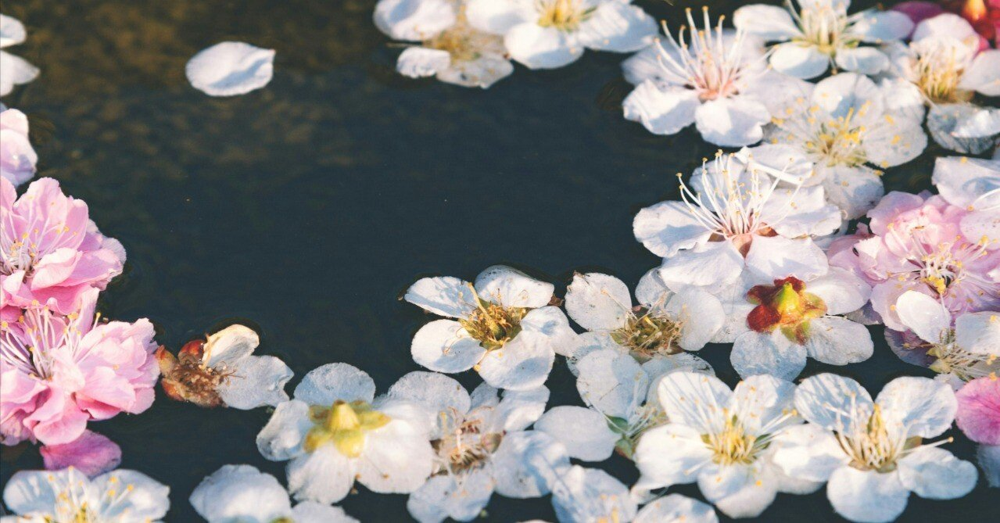

瞬く間に時代は変わっていく。
僕たちはその中を流れるように、なぞるように日々を暮らしていく。
この不確かな世の中で、誰もが確かな存在を求めている。
人によってその形は違うのだろうけど、通りすがりの駅前で汗をかきながら歌う若者を見て、ふとそんなことを思った。
人との関係、今就いている会社や仕事の行く末、当たり前にある日常。
そこに確かなものなど何一つ存在しないのではないかと思う。いつ何が起こってもおかしくないと心づもりだけして、この不安定な日々を何とか乗り越えていく。一日一日、大切に。一歩一歩、着実に。それが、今の僕にできる唯一のことだ。
人生における、映画でいうエンドロール。または、小説でいうところの最後のページ。
息絶えた自分の顔に白い布が被され、数日後には火葬される自身の肉体を、俯瞰した視点で僕だけが見つめている。
その時、悲しんでくれる人はいるのだろうか。現時点でそんな人は、ごく一部を除いてほとんど思い浮かべることができない。
「じいちゃんの声って覚えてる？ 人って亡くなった人の声から忘れていくんだって」
母にそう聞くと、にっこり笑って答えた。
「忘れるわけないよ。何度怒られたことか。そんなことしたら、なに忘れてるんじゃ！ って、じいちゃんに怒られるんだから」
その姿は随分と若い。ああ。これは夢だ。
直感的にそう思うも、彼女に事実を告げるのは無粋なような気がして僕は口を噤む。
ほどなくして、久しく会っていない叔父が部屋に入ってくる。彼も若々しい風貌だ。僕とちょうど30歳違いなのだから頭に白髪が混じっていてもおかしくないのに、夢の力で今の僕と大して変わらない年齢に見える。
祖父の仏壇に慣れた手つきで線香に火をつけて手を合わせる後ろ姿に、同じ質問をする。
小さな煙が天井に昇っていく。彼は背を向けたまま、ゆっくりと言った。
「そうだな。じいちゃんの声はきっと忘れないだろう。声も、顔も、思い出も」
その場面を最後に目が覚めた。
ただの夢なのに、叔父のその言葉が未だ忘れられない。実際に同じ質問をしたら、彼はなんて答えてくれるだろう。
桜の花びらが舗道に散り、その上を革靴やスニーカーが通り過ぎていく。
どんなに美しい花弁を作っても、それは永遠には続かない。花々は自らの運命を承知で、僕たちにその姿を見せてくれているのだろうか。
人間も、生きているうちに自らの花を咲かそうとする。それぞれの夢の蕾を抱えながら。
4月1日の電車の車内には、ぴかぴかの新社会人と思しき若者を多く見かけた。
着慣れないそのスーツ姿もすぐに板についてくるよ。そう心のうちからエールを送る。この先何度めげそうになっても、今持っている夢をどうか捨てずに歩んでいってほしい。僕も大して歴は長くないが、少しだけ先を行く者として、その後ろ姿を応援した。
確かなもの。僕にとって、それは記憶そのものだ。
その記憶すら、冥界へは持っていけないのかもしれない。生きている間にだけ認識できる期間限定品ということも薄々わかっている。
それでも、今日まで泣き笑いした記憶は最期まで大切にし続けたい。今なお、その記憶の数々が、つらい出来事に遭遇した僕を何度も救ってくれるのだから。
知らず知らずのうちに手から零れ落ちていくもの。
一説には故人のことを忘れるのはまず声、次に顔、最後に思い出だという。この説を頭のどこかで覚えていたから、きっと僕は先ほどの夢を見たのだろう。
大切な人との別れは寂しく、ひどく悲しい。
だからこそ、今は何一つ忘れたくないと思う。たとえ忘れてしまっても、その人と過ごした日々の記憶だけは失くしたくない。
そして、僕の目の前から消えても、きっと今もどこかで見守ってくれている。僕はそう強く信じている。
自分の散り際なんて誰も知らない。
でも、いつかその瞬間が訪れたら、色々なことがあったけどいい人生だったと、誰よりも肯定しながら、人知れず散っていきたい。
愛をもって生まれて、誰かに恋焦がれて、夢を追いながら生きてきた、この人生を。淡く光る色から二つとない色彩に変化した花びらを、ひらひらと落としながら。もし叶うのなら、その瞬間だけは、どうしようもなく美しくありたい。